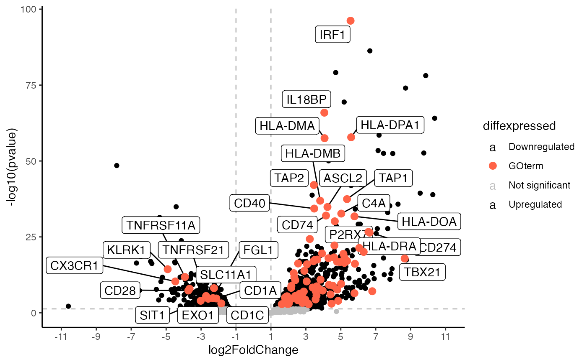

Generates a volcano plot using ggplot2 This function generates a base volcanoplot highlighting genes associated with a certain GOterm that can then be expanded upon using further ggplot functions.
Source:R/go_volcano.R
go_volcano.RdGenerates a volcano plot using ggplot2 This function generates a base volcanoplot highlighting genes associated with a certain GOterm that can then be expanded upon using further ggplot functions.
Usage
go_volcano(
res_de,
res_enrich,
mapping = "org.Hs.eg.db",
term_index,
L2FC_cutoff = 1,
col_to_use = NULL,
enrich_col = "genes",
down_col = "black",
up_col = "black",
highlight_col = "tomato",
overlaps = 20
)Arguments
- res_de
A DESeqResults object created using
DESeq2- res_enrich
A enrichment result object created by for example using topGOtable
- mapping
Which
org.XX.eg.dbto use for annotation - select according to the species- term_index
The location (row) of your GO term of interest in your enrichment result
- L2FC_cutoff
A numeric value that sets the cutoff for the xintercept argument of ggplot
- col_to_use
The column in your differential expression results containing your gene symbols. If you don't have one it is created automatically
- enrich_col
column name from your res_enrich where the genes associated with your GOterm are stored (for example see the topGOtable result in mosdef)
- down_col
The colour for your downregulated genes, default is "gray"
- up_col
The colour for your upregulated genes, default is "gray"
- highlight_col
The colour for the genes associated with your GOterm default is "tomato"
- overlaps
number of overlaps ggrepel is supposed to allow when labelling (for more info check ggrepel documentation)
Examples
library(ggplot2)
library(RColorBrewer) # for a colourful plot
library(ggrepel) # for nice annotations
library(DESeq2)
library("topGO")
#> Loading required package: graph
#> Loading required package: GO.db
#> Loading required package: SparseM
#>
#> Attaching package: ‘SparseM’
#> The following object is masked from ‘package:base’:
#>
#> backsolve
#>
#> groupGOTerms: GOBPTerm, GOMFTerm, GOCCTerm environments built.
#>
#> Attaching package: ‘topGO’
#> The following object is masked from ‘package:IRanges’:
#>
#> members
library(AnnotationDbi)
library("org.Hs.eg.db")
data(res_de_macrophage, package = "mosdef")
data(res_enrich_macrophage_topGO, package = "mosdef")
p <- go_volcano(
res_macrophage_IFNg_vs_naive,
res_enrich = res_enrich_macrophage_topGO,
term_index = 1,
L2FC_cutoff = 1,
mapping = "org.Hs.eg.db",
overlaps = 30
)
#> 'select()' returned 1:many mapping between keys and columns
#> Warning: Direct call of 'as.data.frame.numeric()' is deprecated. Use 'as.data.frame.vector()' or 'as.data.frame()' instead
#> Warning: Direct call of 'as.data.frame.numeric()' is deprecated. Use 'as.data.frame.vector()' or 'as.data.frame()' instead
#> Warning: Direct call of 'as.data.frame.numeric()' is deprecated. Use 'as.data.frame.vector()' or 'as.data.frame()' instead
#> Warning: Direct call of 'as.data.frame.numeric()' is deprecated. Use 'as.data.frame.vector()' or 'as.data.frame()' instead
#> Warning: Direct call of 'as.data.frame.numeric()' is deprecated. Use 'as.data.frame.vector()' or 'as.data.frame()' instead
#> Warning: Direct call of 'as.data.frame.numeric()' is deprecated. Use 'as.data.frame.vector()' or 'as.data.frame()' instead
p
#> Warning: Removed 17712 rows containing missing values or values outside the scale range
#> (`geom_label_repel()`).
#> Warning: ggrepel: 57 unlabeled data points (too many overlaps). Consider increasing max.overlaps
